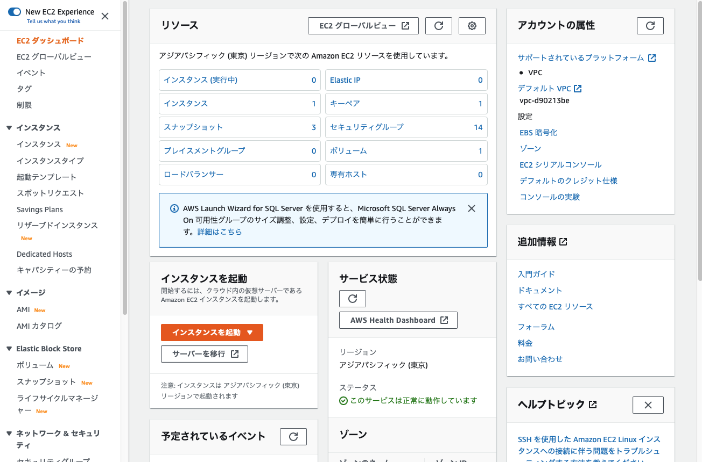
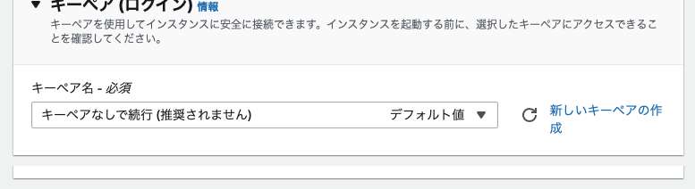
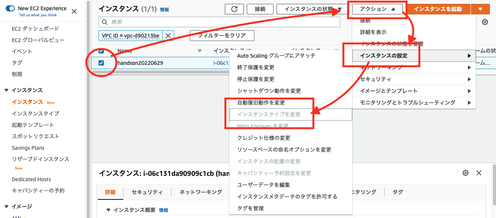
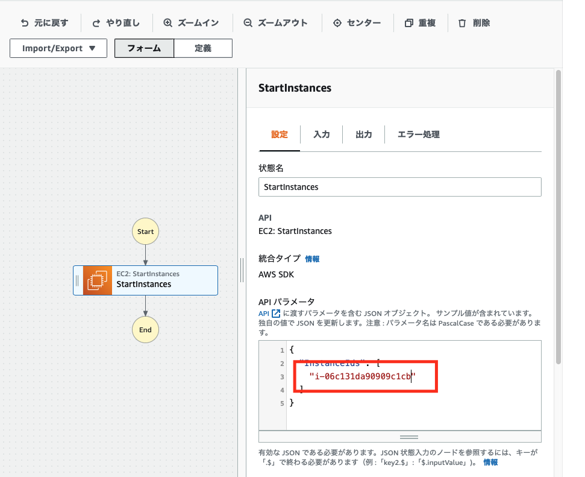
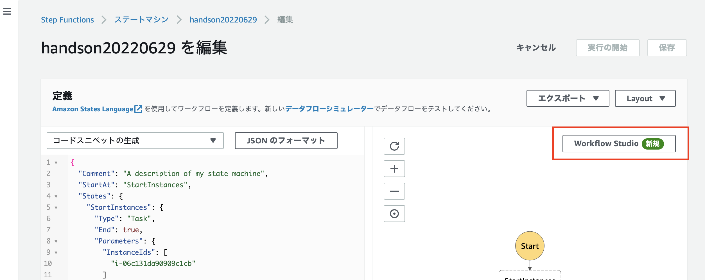
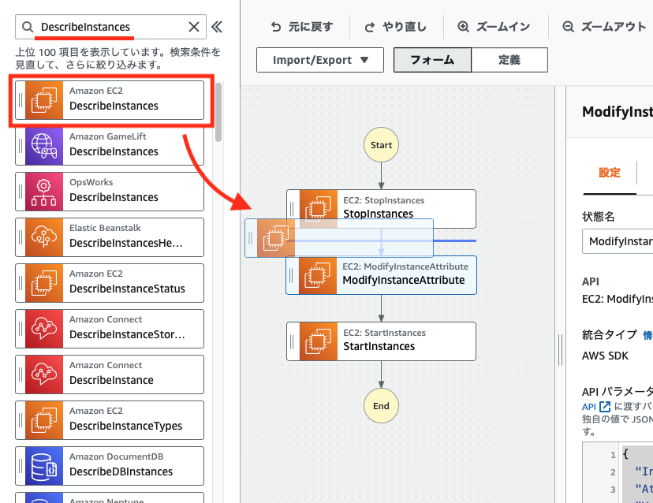
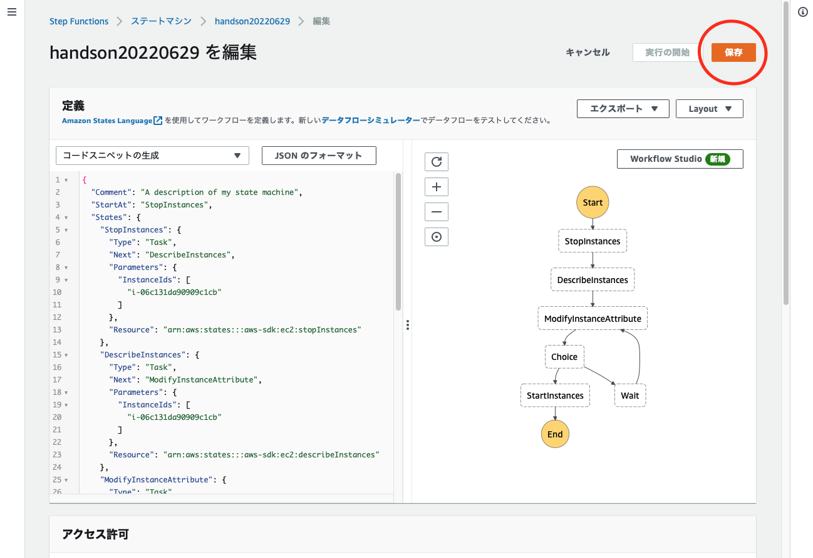

みなさんは、AWS Step Functions (以下、Step Function) を利用したことがありますか？
Step Functions はステートマシンという AWS のマネージドサービスで、AWS Lambda や Amazon Simple Nortification Service などのマイクロサービス・コンポーネントを疎結合して実行できるサービスです。
Amazon States Language
Step Fuctions は、JSON ベースの Amazon States Language (ASL) にて記載していきます。この ASL を利用して各ステートをコーディングしながら組み上げていくのは、初心者には敷居が高く習熟する時間も必要です。

AWS Step Functions Workflow Studio
AWS Step Functions Workflow Studio (以下、Workflow Studio) は、2021 年 6 月にリリースされた GUI ベースのグラフィカルなコーディングツールです。 ブロックを繋いでいくことで、ワークフローを作成することができ、アクションやフローが比較的短時間でワークフローの作成方法をご理解いただければと思います。

AWS News Blog:
New – AWS Step Functions Workflow Studio – A Low-Code Visual Tool for Building State Machines
本ハンズオンでは「ある特定の時間帯だけ EC2 インスタンスのインスタンスファミリーを変更する。」という簡単なツールを作成します。
Step Function Stuio の使い方や、ブロック間の値の渡し方などを理解いただき、最終的に JSON コーディングにステップを進めていただく初心者向けの内容となっています。

インスタンスファミリーを変更するフロー
Amazon EC2 インスタンスは、汎用 m 系ファミリー や、メモリー最適 r 系ファミリー など、用途に応じた様々なインスタンスタイプが用意されています。
インスタンスファミリーやインスタンスサイズを変更するには、インスタンスを停止する必要があります。
大まかな流れは以下のようになります。

まず、この手順を手動でやってみたいと思います。
以下、URL をクリックして EC2 コンソールを開きます。
https://ap-northeast-1.console.aws.amazon.com/ec2/v2/home?region=ap-northeast-1#Home:
画面遷移したら、オレンジの [ インスタンスを起動 ▼ ] をクリックして、ドロップダウンメニューから [ インスタンスを起動 ] を選択してください。

インスタンスを起動
[ インスタンスを起動 ] の画面に遷移するので、Name タグを指定してください。
ここでは handson20220629 としました。
オレンジの [ インスタンスを起動 ] ボタンをクリックすると、
以下のエラーが表示されるので、
キーペアなし を指定してください。

インスタンスのステータスが [ 実行中 ] になったら、インスタンスタイプの変更を試してみます。
インスタンスのチェックボックスにチェックを入れて、[ アクション ] から [ インスタンスの設定 ] と進めてください。すると、[ インスタンスタイプを変更 ] がグレーアウトしています。

では、インスタンスを停止してみましょう。
[ インスタンスの状態 ] から [ インスタンスを停止 ] を選択してください。
インスタンスの状態が [ 停止中 ] から

[ 停止済み ] に変わります。

再度、[ アクション ] から [ インスタンスの設定 ] と進めると、[ インスタンスタイプを変更 ] が活性化されて押せるようになっています。
[ インスタンスタイプを変更 ] をクリックして、

t2.micro から t3.nano に変更してください。

EC2 の変更手順を確認しましたので、この作業を Step Functions にて実装してみたいと思います。
まず最初に、EC2 コンソールのブラウザタブとは別のタブで以下 URL を開き、Step Functions コンソールにアクセスしてください。
初めて利用される場合は、以下のようなウェルカムページが表示されるかと思います。
https://ap-northeast-1.console.aws.amazon.com/states/home?region=ap-northeast-1#/homepage
[ 今すぐ始める ] ボタンをクリックしてください。
作成方法の選択
[ 作成方法の選択 ] 画面に遷移しますので、[ ワークフローを視覚的に設計 ○ ] と [ 標準 ] のまま、変更せずに [ 次へ ] ボタンをクリックしてください。

[ ステップ 2: ワークフローを設計 ] が表示されるので、インスタンスを起動するアクションを追加してみます。

検索ボックスに startinstances と入力し、候補に表示された [ Amazon EC2 StartInstances ] をフローまでドラッグします。
右側の [ API パラメータ ] に EC2 インスタンスのインスタンス ID を入力してください。

ここまでできたら、[ 次へ ] ボタンをクリックしてください。
[ 生成されたコードを確認 - 省略可能 ] 画面も [ 次へ ] をクリックしてください。
(スクリーンショットなし)
[ ステートマシン設定を指定 ] 画面に遷移するので、名前を設定します。ここでは handson20220629 としました。
また、アクセス許可は [ 新しいロールの作成 ] が選択されていることを確認してください。

ログ記録、X-Ray トレースはエラー発生時の切り分けに便利ですが、本ハンズオンでは作成しません。
タグも不要です。

オレンジの [ ステートマシンの作成 ] ボタンをクリックしてください。
ステートマシンが作成されたら、[実行の開始] ボタンをクリックしてください。
変な名前のボタンですが、上下どちらのボタンをクリックしても実行されます。

確認メッセージが表示されたら、再度オレンジの [ 実行の開始 ]ボタンをクリックします。

すると、エラーになります。赤くなっているブロック [StartInstances] をクリックし、右側のペインの [例外] タブをクリックすると、権限エラーが発生していたことがわかります。
IAM コンソールにてポリシーをアタッチします。
以下リンクから、3 つめのウインドウで IAM コンソールのロールページを開きます。
https://us-east-1.console.aws.amazon.com/iamv2/home?region=us-east-1#/roles
IAM ロールのページで、検索ボックスに StepFunctions まで入力すると、先ほどステートマシンを作成したときに自動生成されたロールが表示されます。

ロールの名前をクリックして画面遷移したら、[ 許可を追加 ] から [ ポリシーをアタッチ ] ボタンをクリックして下さい。

AmaoznEC2FullAccess のチェックボックスにチェックを入れて、[ ポリシーをアタッチ ] ボタンをクリックしてください。

追加で、AmazonSSMManagedInstanceCore もアタッチしておいてください。

以下のようなポリシーになれば OK です。
IAM コンソールのウインドウを閉じて、次のステップに進んでください。
<ターゲットのインスタンスのみで絞れるもの>
- EC2 StartInstances
- EC2 StopInstances
<該当のパラメーターだけで絞れるもの>
- SSM GetParameters
<すべて>
- EC2 DescribeInstances
IAM ロールの設定ができたので、再度ステートを実行してみましょう。
[ 新しい実行 ] ボタンをクリックします。

成功すると [ StartInstances ] のブロックが緑色になります。ブロックをクリックすると右側の [ 入力と出力 ] のタブに入力と出力の JSON コードがそれぞれ確認できます。

EC2 コンソールのタブに移動すると、インスタンスが起動しているのが確認できるかと思います。
[ 停止済み ] のステータスから変わらない方は、下図の [更新] ボタンをクリックして確認してください。
更にアクションブロックを追加していきます。
インスタンスファミリーを変更するフローは以下の通りでした。
インスタンスを停止する
上から順番にアクションを入れていきましょう。
[ ステートマシンの編集 ] ボタンをクリックし、

[ Workflow Studio ] をクリックします。

アクションから、[ EC2: StopInstances ] をドラッグして、[ StartInstances ] の上に挿入します。
[ API パラメータ ] にインスタンス ID を入力します。

これで、インスタンスを止めれるようになりました。
インスタンスファミリーを変更する
インスタンスファミリーを変更するには、ModifyInstanceAttribute を利用します。
アクションから、[ EC2: ModifyInstanceAttribute ] をドラッグして、[ StopInstances ] と [ StartInstances ] の間に挿入します。
[ API パラメータ ] には、
{
"InstanceId": "＜インスタンス ID＞",
"Attribute": "instanceType",
"Value": "t2.micro"
}
と入力してください。
以下のようなイメージです。

これで、インスタンスファミリーを「t2.micro」に変更できるようになりました。
インスタンスが停止しているか確認する
インスタンスの停止状態は DescribeInstances を利用します。
アクションから、[ EC2: DescribeInstances ] をドラッグして、[ StopInstances ] と [ ModifyInstanceAttribute ] の間に挿入します。

[ API パラメータ ] には、StopInstances のブロックに登録したものと同じ以下を入力してください。
{
"InstanceIds": ["＜インスタンス ID＞"]
}

一通りのアクションは追加できましたが、手動でインスタンスファミリーを変更した際のアクションをもっと細分化すると、
- インスタンスが停止しているか確認する
- インスタンスが停止するのを待つ
というアクションを人間がよしなに行っています。これを機械にやってもらうための設定をします。

Choice
インスタンスが停止したかどうか「状態」は、DescribeInstances で取れているので、この取得した「状態」をみて、次のステップに進むのか待つのか判断をする必要があります。
Choice を使って分岐を入れます。
ここまで [ アクション ] を追加してきましたが、すぐ横に [ フロー ] があるのでクリックしてください。
フローには、分岐や待機といった人間が自然と行っている「考えて行動する」処置を行うための機能があります。
Choice をドラッグして、[ DescribeInstances] と [ StopInstances ] の間に挿入してください。

判定は基準はインスタンスが停止したかどうか？です。
[ Rule #1 ] をクリックして、

[ Add conditions ] ボタンをクリックします。
[ Conditions for rule #1 ] ダイヤログが開くので、以下の内容を入力して [ 条件を保存する ] ボタンをクリックしてください。
Not | Variable | Operator | Value |
空欄 | $.Reservations[0].Instances[0].State.Name | matches string | stopped |
以下のようなイメージです。
インスタンスが停止している場合は、StartInstances のステートでインスタンスを起動するので、[ Then next state is: ] のドロップダウンメニューから [ StartInstances ] を選択してください。

インスタンスが停止していない場合のアクション
インスタンスが停止していない場合は、停止するまで待つ必要があります。
ステートの処理を待機させるには wait を使います。
[ フロー ] タブから、[ wait ] ブロックをドラッグして、[Default] 側にドロップしてください。

右側の詳細ペインで、秒を 30 seconds に、次の状態を ModifyInstanceAttribute にします。

これで完成です！
以下の画像と見比べて異なる部分があれば修正してください。
問題なければ、[ 適用して終了 ] ボタンをクリックしてください。

Step Functions の画面に戻るので、[ 保存 ] ボタンをクリックして、ステートマシンの設定を保存してください。

確認メッセージが表示されますので、[ 保存を続行します ] ボタンをクリックして、保存します。
準備が整いましたので、テスト実行してみてください。

ステートが進んでいくのがお分かりいただけるかと思います。
水色が実行されているステートで、緑が成功したステートになります。

EC2 コンソールから、インスタンスが m6i.large で起動したことを確認してください。